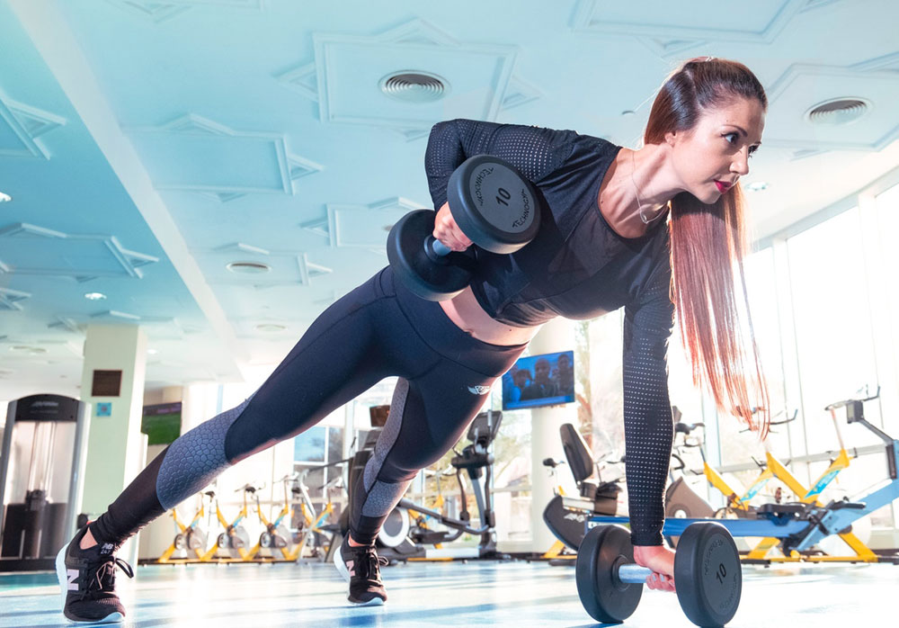
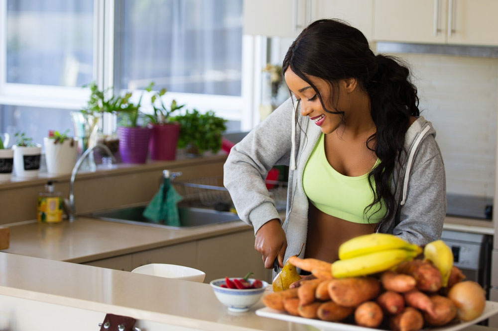
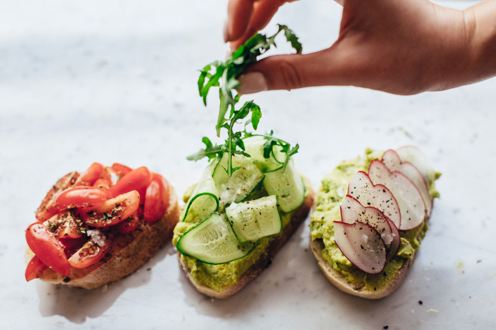
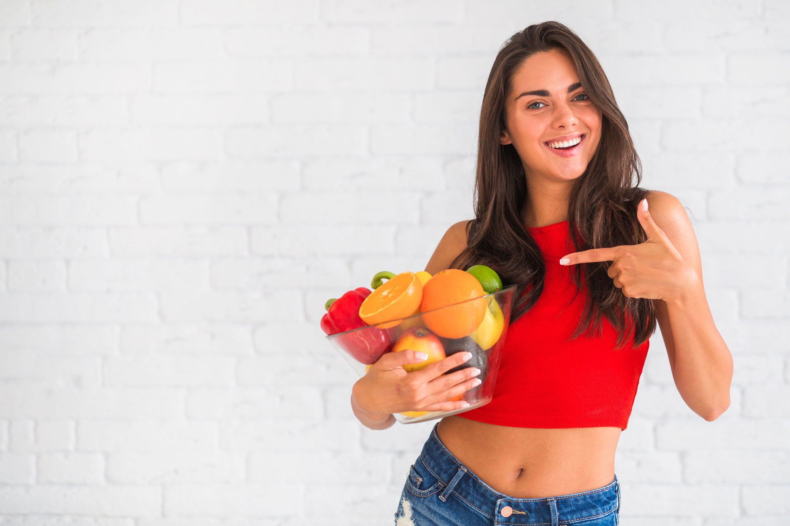

İletişim Numarası: +444 235 26 26
Mail Adresimiz: diyettakip@email.com

Soğuk havalarla birlikte vücudun savunma mekanizması da zayıflar. Bu dönemde doğru besinleri tüketmek, bağışıklık sistemini güçlendirmek açısından büyük önem taşır. Özellikle C vitamini, çinko ve antioksidan içeren gıdalar hastalıklara karşı doğal bir kalkan oluşturur.
Portakal, mandalina ve greyfurt gibi turunçgiller; badem ve ceviz gibi kuruyemişler; yoğurt ve kefir gibi probiyotik kaynaklar günlük beslenmede mutlaka yer almalıdır. Ayrıca yeşil yapraklı sebzeler, demir ve folik asit bakımından zengindir.
Haldun Bilginer | Ocak 30, 2021
Bağışıklığı güçlü tutmak yalnızca beslenmeyle değil, yaşam alışkanlıklarıyla da ilgilidir. Günde 7-8 saat uyumak, düzenli egzersiz yapmak ve yeterli su tüketmek bağışıklık hücrelerinin işlevini destekler. Stresten uzak durmak ve meditasyon gibi aktivitelerle zihinsel dengeyi korumak da genel sağlığı olumlu etkiler.
Unutmayın, güçlü bir bağışıklık sistemi sürdürülebilir bir yaşam tarzı ile mümkündür. Küçük ama istikrarlı adımlar, sağlığınızı korumanın anahtarıdır.
Azra Gelemiş | Aralık 27, 2020Kahvaltı, günün en önemli öğünüdür. Güne sağlıklı bir kahvaltıyla başlamak, hem enerji seviyesini artırır hem de odaklanmayı kolaylaştırır. Protein, lif ve sağlıklı yağ içeren yiyecekler uzun süre tokluk sağlar ve kan şekerini dengeler.
Yulaf ezmesi, yumurta, avokado, tam tahıllı ekmek ve taze meyveler güçlü bir kahvaltı için ideal seçimlerdir. Şekerli gıdalardan kaçınmak ve yeşil çay gibi antioksidan içeren içecekleri tercih etmek de vücudu canlandırır.
Nisan Erdem | Ocak 12, 2020Sabah kahvaltısına 10 dakika ayırmak bile günün geri kalanında ruh halinizi etkiler. Akşamdan hazırlanan overnight yulaf, smoothie bowl veya haşlanmış yumurta gibi alternatiflerle sabah telaşını azaltabilirsiniz.
Unutmayın, iyi bir sabah rutini sadece midenizi değil, zihninizi de besler. Kendinize bu zamanı tanıyın ve güne güçlü bir başlangıç yapın.
Ali Öztürk | Ekim 7, 2019
Sağlıklı yaşam süreci bazen sabır ister. Motivasyonun düştüğü anlarda vazgeçmek yerine küçük değişikliklerle yeniden başlamak, başarıya giden yolu kolaylaştırır. Hedeflerinizi hatırlayın ve neden başladığınızı kendinize sık sık hatırlatın.
Bir gün kötü beslenseniz bile bu, tüm ilerlemenizi yok etmez. Önemli olan, ertesi gün kaldığınız yerden devam etmektir. Küçük adımların birikimi, büyük dönüşümler yaratır.
Unutmayın, düşmek normaldir ama ayağa kalkmak bir tercihtir. Kendinize inanın ve her sabah yeniden başlama gücünü kutlayın.
İrfan Yılmaz | Eylül 29, 2019
Yoğun iş temposu, sağlıklı beslenmeyi zorlaştırabilir. Ancak birkaç küçük planlama ile gün boyu enerjik kalmak mümkündür. Ofise sağlıklı atıştırmalıklar getirmek, su içmeyi unutmamak ve öğle yemeğini önceden hazırlamak bu konuda büyük fark yaratır.
Çay ve kahve tüketimini sınırlamak, yeşil çay veya bitki çayı gibi alternatiflerle sıvı dengesini korumak faydalıdır. Ayrıca her 1-2 saatte bir kısa molalar vermek hem bedeni hem zihni tazeler.
Unutmayın, sağlıklı yaşam sadece evde değil, işte de sürdürülebilir olmalıdır. Küçük ofis alışkanlıkları bile uzun vadede büyük fark yaratır.
Mehmet Karakale | Ağustos 20, 2018
Yorum Yap